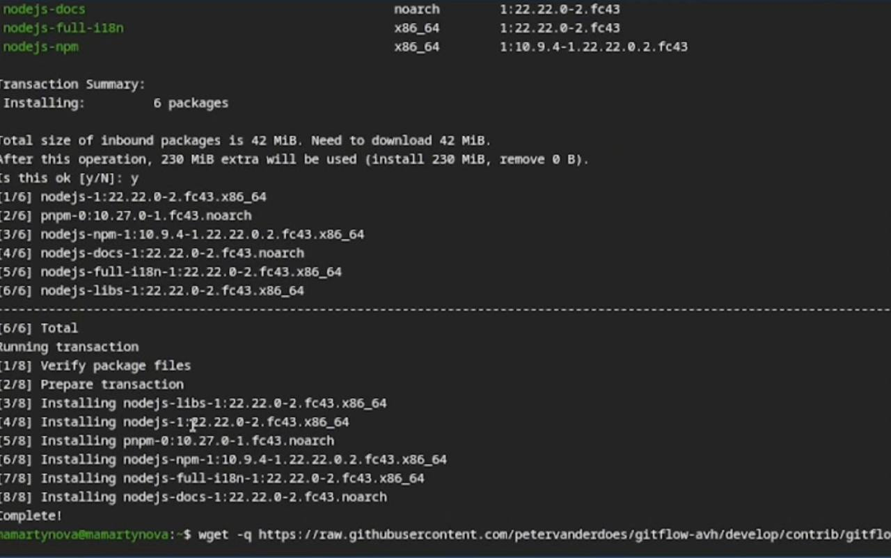
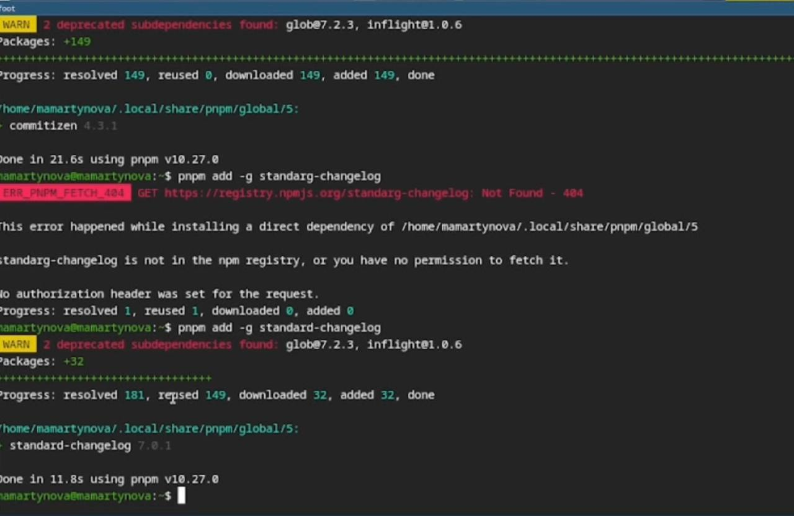
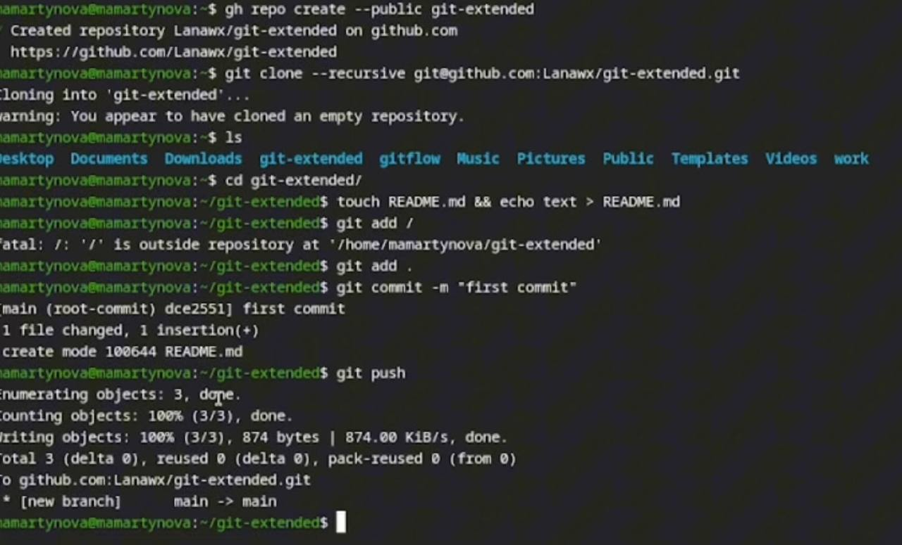
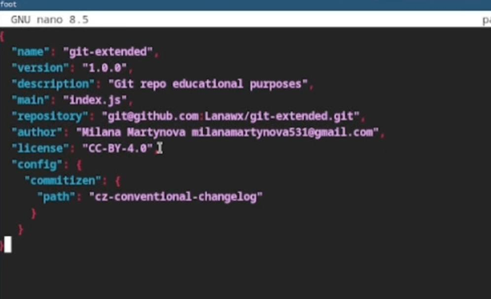
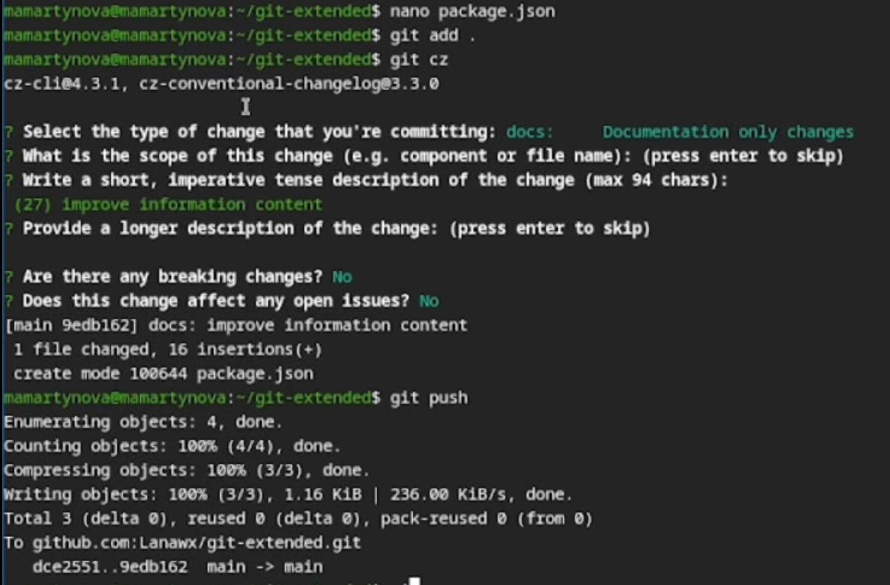
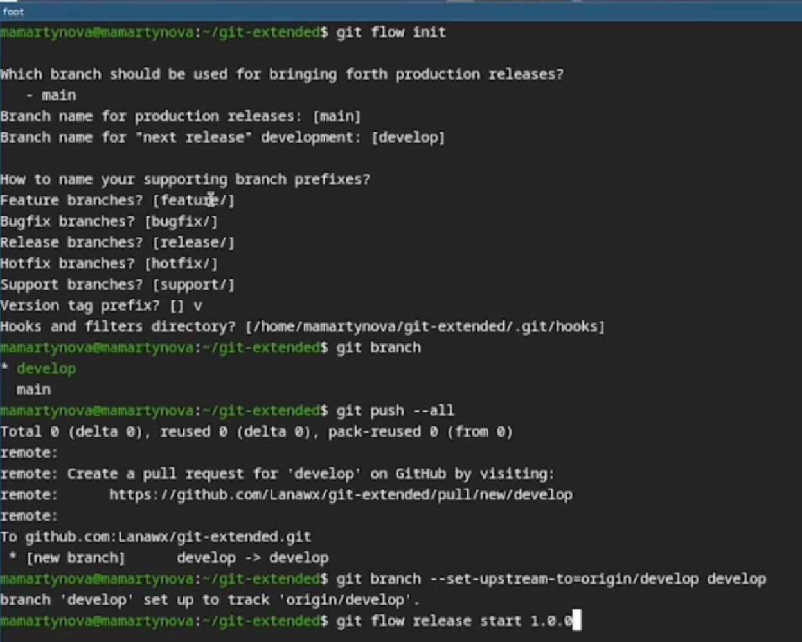
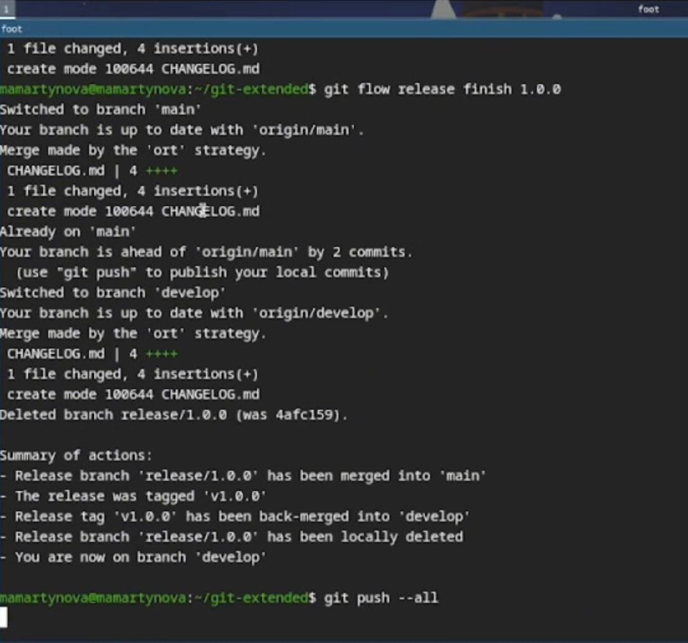
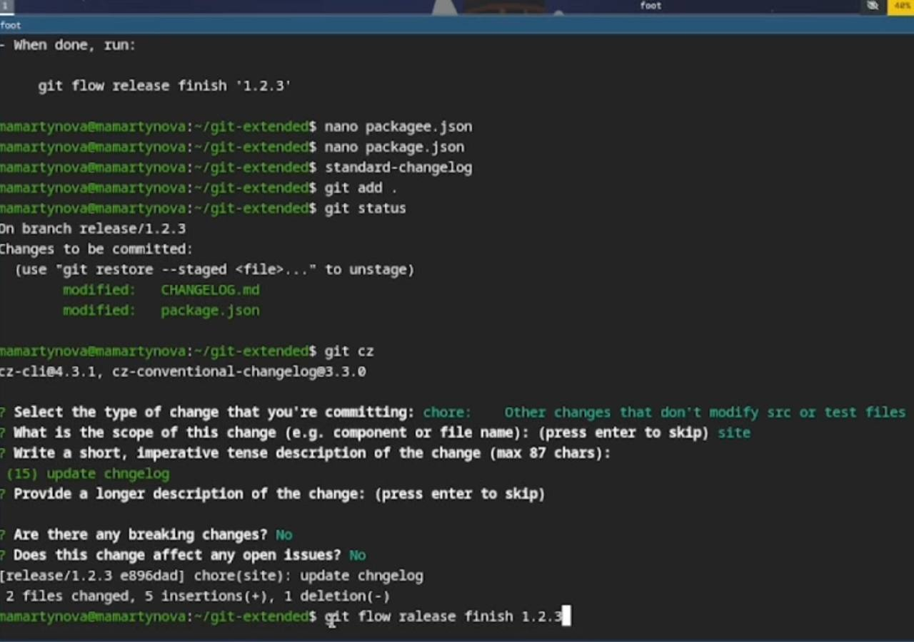

Освоение продвинутых методов работы с git-репозиториями и механизмами создания релизов.
Gitflow Workflow, опубликованная Винсентом Дриссеном, предполагает строгую модель ветвления с учетом выпуска проекта и включает создание отдельной ветки для исправления ошибок в рабочей среде. Семантическое версионирование (SemVer) задается в формате МАЖОРНАЯ.МИНОРНАЯ.ПАТЧ, где мажорная версия увеличивается при несовместимых изменениях API, минорная — при добавлении новой обратно совместимой функциональности, а патч-версия — при обратно совместимых исправлениях. Conventional Commits — это соглашение о структуре сообщений коммитов, которое тесно связано с SemVer и регламентирует основные типы коммитов.
Устанавливаю nodejs, пакетный менеджер для него pnpm и gitflow. (рис. 1)

Устаналиваю через pnpm commitizen и standard-changelog.(рис. 2)

Создаю новый репозиторий и делаю там первый коммит. (рис. 3)

Инициализирую и конфигурирую общепринятые коммиты в созданной директории через редактирование package.json.(рис. 4)

Делаю снимок измененний, создаю коммит и отправляю на удаленный репозиторий. (рис. 5)

Инициализирую в репозитории git flow и создаю 1 релиз в только что созданной ветке develop. (рис. 6)

Создаю список изменений через standard changelog, заканчиваю релиз и выгружаю на удаленный репозиторий изменения. (рис. 7)

Инициализирую ветку feature для работы над новой функциональностью, готовлю релиз и загружаю на github. (рис. 8)

В результате выполнения лабораторной работы были освоены навыки корректной работы с git-репозиториями.